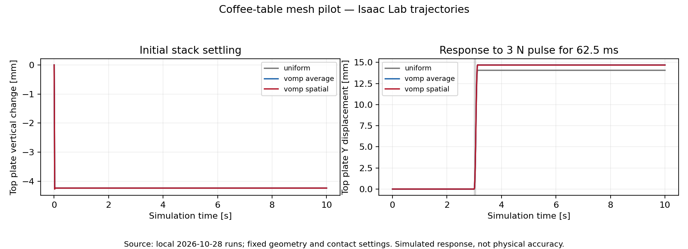
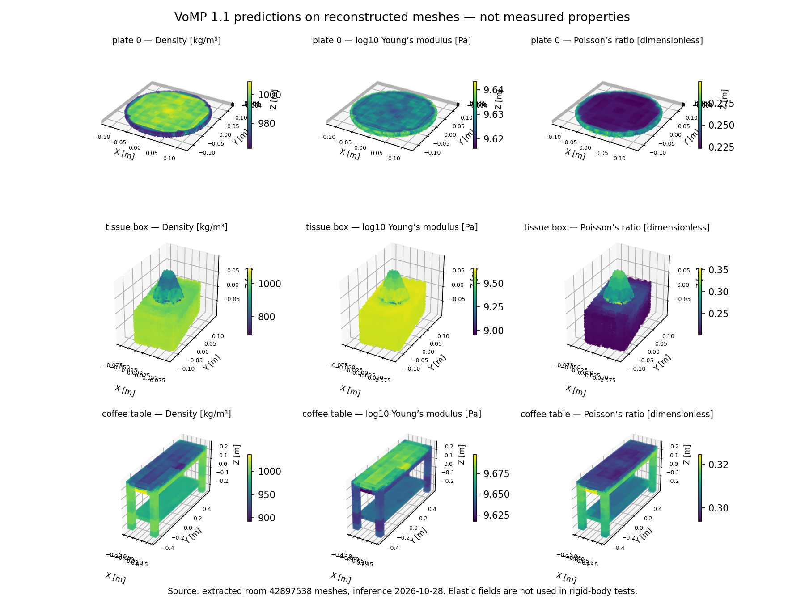
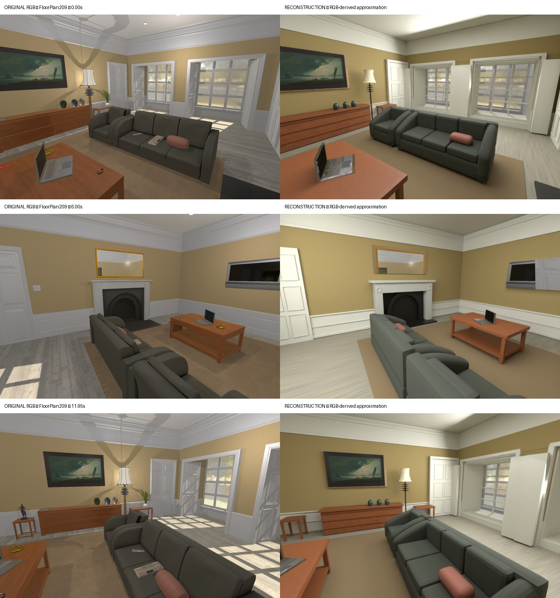
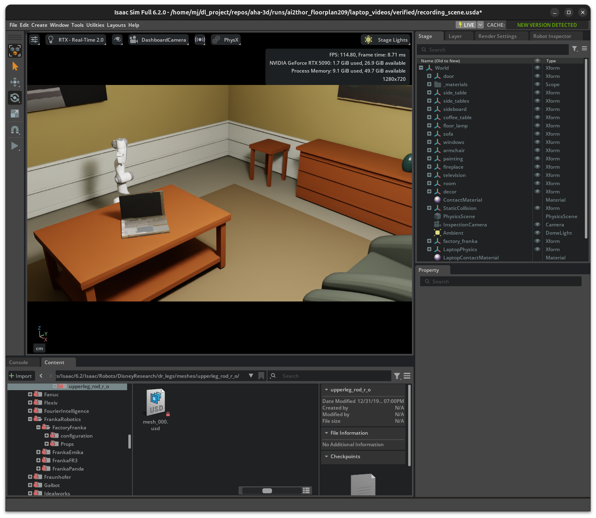

Physical Attribute Assignment for Reconstructed Indoor Scenes
Coffee-table meshes → VoMP → Isaac Lab
Five plates and a tissue box remain supported on a fixed coffee table. All six dynamic objects pass the 10-second rest test, including three slightly perturbed starting arrangements. Both density baselines also pass: this demonstrates a working physics pipeline, not a stability advantage from VoMP.
This pilot uses Evan’s existing AHa-3D A2 material showcase, not SceneRig output. The original meshes and nominal placements are preserved. Each plate is a separate rigid body; the tissue box and its tissue puff form one rigid assembly on the lower shelf. The glass bowl, snacks and surrounding room are excluded. The table is fixed, so its own dynamic stability is not tested.
What VoMP contributes
Pretrained VoMP 1.1 estimates density, Young’s modulus and Poisson’s ratio from each distinct object’s mesh and baked appearance. Density is integrated over the mesh to obtain mass, center of mass and inertia. The matching plate instances share one prediction. Isaac’s loaded inertial properties were checked against the exported values.
Only mass distribution is exercised in these rigid-body tests. Elastic fields are saved but do not produce deformation. Static friction 0.6, dynamic friction 0.4 and restitution 0 are explicit assumptions, not VoMP predictions. The reconstructed plates are solid disks, and the tissue puff is rigid.
Measured outcomes and controls
- Rest: uniform density, VoMP average density and VoMP spatial density all pass. Three VoMP placement perturbations also pass.
- Force response: the top plate travels 14.07 mm with uniform density, 14.70 mm with VoMP average density and 14.69 mm with VoMP spatial density.
- Friction sensitivity: halving both assumed friction coefficients increases displacement to 44.55 mm; multiplying them by 1.5 reduces motion to approximately zero. All objects remain supported.
- Property limitation: predicted mass is about 0.39 kg per plate and 3.13 kg for the tissue assembly. The tissue estimate is implausibly heavy for a typical tissue box; the solid reconstruction does not represent its hollow construction or contents.

VoMP property fields and test protocol

Isaac Lab 2.3.2.post1 / Isaac Sim 5.1 runs at 240 Hz for 2,400 steps. After two seconds, the rest criteria require drift below 2 mm, rotation change below 2°, final-second maximum speed below 1 mm/s, and continued support with absolute vertical clearance below 2 mm. Support checks use transformed vertex bounds and XY overlap for this upright stack; they are not general mesh-penetration certification.
The three perturbation seeds move each object by up to 1 mm in XY and raise it by 1 mm before simulator initialization. An initial solver diagnostic had residual velocity despite stable positions; enabling per-iteration force integration resolved it. Earlier post-initialization pose changes disrupted the stack order; those failed diagnostics are retained separately from the corrected trials.
Download coffee-table evidence (11 selected trials, diagnostics and validation). The original scene is unchanged and was checked against Evan’s archive. CA-1M supplies no physical-property ground truth for this scene, so stability is not evidence of real-world mass or friction accuracy.
1. Problem and motivation
A visually convincing reconstruction is not necessarily a physically usable environment. A room may reproduce the appearance and arrangement of its furniture while lacking reliable object masses, inertial properties, collision geometry, and contact parameters. These omissions become consequential when objects rest on one another or when a robot applies forces: the scene must remain stable, prevent interpenetration, and produce plausible motion. The research objective is therefore to extend appearance-oriented reconstruction with physical attributes and contact validation, so that reconstructed environments can support interaction in simulators such as Isaac Sim, Isaac Lab, and MuJoCo.
2. Reconstruction baseline: AHa-3D
AHa-3D provides the reconstruction baseline. Its agentic workflow converts indoor video into an editable Blender scene using reference geometry and reusable furniture and materials. This is useful because the output contains explicit scene objects that can subsequently be assigned simulator properties, rather than only a rendered representation.
The limitation addressed here is the gap between visual reconstruction and validated physical behavior. In the current room experiment, geometry and appearance were fitted from RGB observations; source simulator meshes and physical labels were not used to construct the room. Metric scale remains uncalibrated, some geometry and materials are approximate, and agreement with source images does not establish correct mass or contact response. Adding a physics engine alone does not resolve these uncertainties. We therefore investigate a separate property-assignment stage and an evaluation procedure that can compare the reconstructed scene with a known reference environment.
3. Reference dataset: AI2-THOR
AI2-THOR/iTHOR is the reference dataset for the earlier FloorPlan209 experiment because it provides furnished, interactive indoor rooms in which both observations and interactions can be generated under controlled conditions. Unlike an ordinary room video, the source environment is accessible: RGB observations can be recorded for reconstruction while simulator metadata and interaction outcomes can be reserved for evaluation. This makes it suitable for studying the difference between recovering a room’s appearance and recovering its physical behavior.
AI2-THOR exposes object poses, bounding boxes, and receptacle relationships, as well as mass for pickupable or movable objects and material categories for applicable objects. These annotations can provide simulation ground truth: after matching a reconstructed object to its source counterpart and calibrating scale, predicted mass can be compared with the authored mass, while support relationships and controlled push or drop trajectories can be evaluated against source behavior. This is a proposed evaluation protocol; the present experiment has not yet completed that quantitative comparison. The annotations are authored simulator values, not laboratory measurements, and material categories are not numerical mechanical properties. Friction is also not a universal per-object label in the standard metadata, so further asset inspection or controlled system identification would be needed for that comparison. [1]
4. Physical property estimation with VoMP
VoMP predicts volumetric mechanical property fields from an object’s reconstructed geometry and appearance. We use the official pretrained VoMP 1.1 model to estimate density, Young’s modulus, and Poisson’s ratio for selected objects. Integrating density over the occupied volume provides estimates of mass and inertial quantities, which can inform the simulator representation. These estimates depend on reconstruction scale and geometry and therefore require validation rather than being treated as known physical truth.
In the earlier FloorPlan209 work, VoMP was run on the reconstructed coffee table, side table, and armchair. That Isaac experiment treats this furniture as rigid bodies; predicting elastic properties does not imply that deformation has been simulated. Friction and restitution are assigned separately. The laptop comparison below is a distinct contact sanity check with manually specified properties, and does not demonstrate the accuracy of VoMP predictions.
5. Room experiment: FloorPlan209
The experiment uses the furnished living room FloorPlan209. A 12-second source sequence comprising 240 RGB frames at 20 fps was captured in AI2-THOR and processed through the AHa-3D workflow. The resulting editable room was exported to USD and opened in Isaac Sim. Figure 1 shows the source environment used as visual ground truth alongside the reconstructed camera-path preview; Figure 2 compares representative views. The reconstruction retains the principal room structure and furniture arrangement but differs in fine geometry, small objects, materials, and illumination.


6. Preliminary contact experiment
To isolate the effect of adding physical behavior, we apply the same 12 cm kinematic block stroke to the laptop from an identical initial configuration. In the first condition, laptop rigid-body dynamics and collisions are disabled. In the second, the laptop has an assumed mass of 2 kg, collision shapes for its base and screen, static and dynamic friction coefficients of 0.6 and 0.4, and zero restitution. The lid is treated as rigid. Both trials use the same camera and pusher trajectory.
This result verifies that the assigned rigid-body and collision representation produces visible contact response in this setup. It does not establish that the assumed laptop mass or friction matches AI2-THOR, nor that the reconstructed scene reproduces the source simulator’s dynamics. The next stage is to extract applicable source properties, establish object correspondences and scale, and compare physical parameters and controlled interaction trajectories before extending the experiment to robot-driven manipulation.
References and evidence
- AI2-THOR: environment state and object metadata; iTHOR environment overview.
- AHa-3D: Agentic Tool Use for Real2Sim.
- VoMP: Predicting Volumetric Mechanical Properties, official implementation.
- Local experiment summary: dataset, reconstruction preview, property assumptions, and measured laptop displacement.